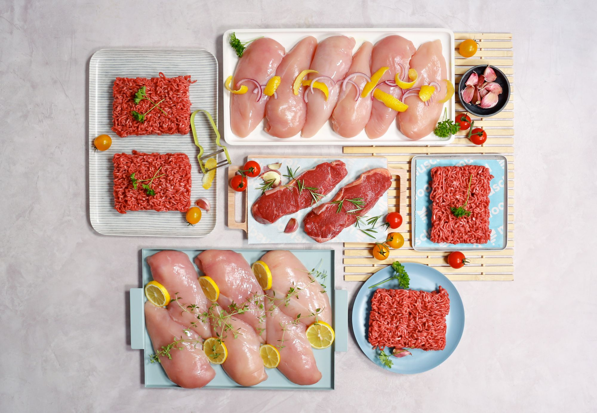
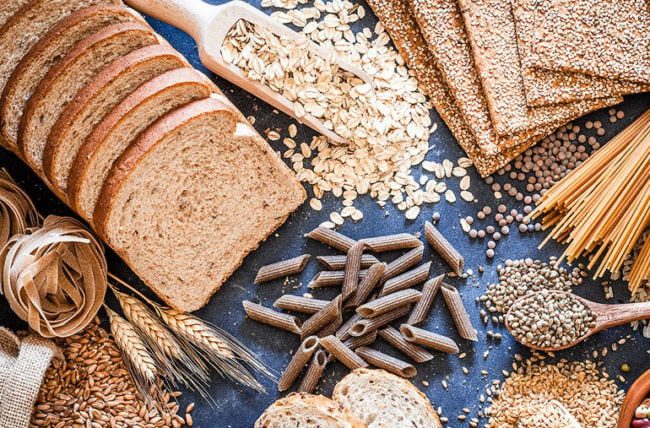

Healthy Life Start with Healthy Food
Eating a wide variety of nutritious foods, including fruit, vegetables, nuts, seeds, and lean protein can help support your overall health.It’s easy to wonder which foods are healthiest.A vast number of foods are both healthy and tasty.
Fruits and berries
Fruits and berries are among the world’s most popular health foods
These sweet, nutritious foods are very easy to incorporate into your diet because they require little to no preparation.

Nuts and seeds
Despite being high in fat and calories, nuts and seeds may aid in weight loss
These foods are crunchy, filling, and loaded with important nutrients that many people don’t get enough of, including magnesium and vitamin E.
They also require almost no preparation, so they’re easy to add to your routine
Some people develop nut allergies as they grow older. If you have a reaction after eating any kind of nut, eliminate it from your diet.

Vegetables
vegetables are among the world’s most concentrated sources of nutrients
There’s a wide variety available, and it’s best to eat many different types every day

Fish and seafood
Fish and other seafood tend to be very healthy and nutritious
They’re especially rich in omega-3 fatty acids and iodine, two nutrients that most people don’t consume enough of
Studies show that people who eat the highest amounts of seafood — especially fish — tend to live longer and have a lower risk of many illnesses, including heart disease, dementia, and depression.

Dairy
dairy products are a healthy source of various important nutrients.
Full-fat dairy seems to be the most nutritious option, and studies show that people who eat the most full-fat dairy have a lower risk of obesity and type 2 diabetes
.If the dairy comes from grass-fed cows, it may be even more nutritious because it’s higher in some bioactive fatty acids such as conjugated linoleic acid and vitamin K2.

Meats
Leans,unprocessed meats can be included in a healthy diet.like lean beef,chicken breasts and lambs.
Grains
Whole grains are an important addition to your diet because they provide a variety of micronutrients and fiber and are fuel for your body.
Just keep in mind that they’re relatively high in carbs, so they’re not recommended for those who are on low carb diets.Like Brown rice,Oats and Quinoa.

Breads
Many people eat a lot of highly processed white bread.
If you are trying to adopt a healthier diet, it’s helpful to compare product labels and choose the bread with the most dietary fiber and the least added sugar.Like Ezekiel bread and Homemade low carb breads.

Legumes
Legumes are a great plant-based source of protein, iron, and fiber.
While it’s true that legumes contain antinutrients, which can interfere with digestion and nutrient absorption, it’s possible to reduce or eliminate antinutrient content by soaking and properly preparing them .
legumes are a great plant-based source of protein.Like Green beans,Kidney beans,Lentils and Peanuts.